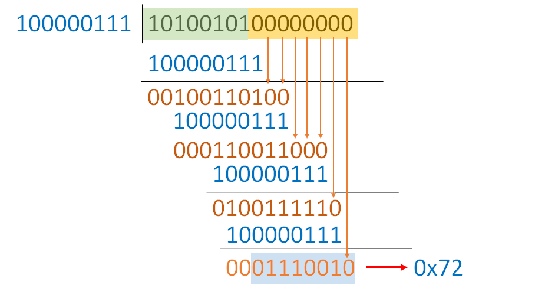
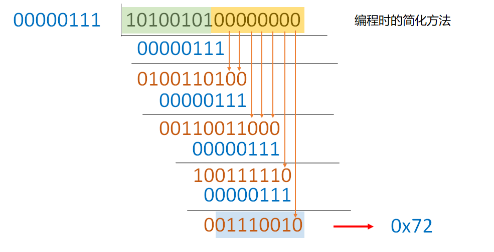
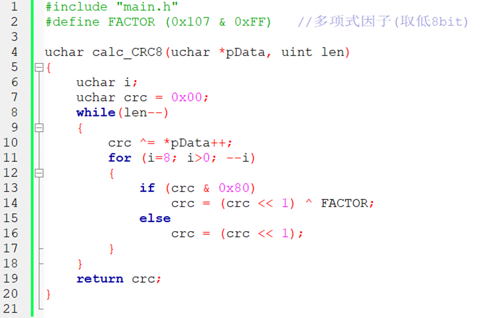

CRC检验背后的原理与算法
CRC概述
循环冗余校验（Cyclic Redundancy Check， CRC） 又称多项式码，是一种根据网络数据包或计算机文件等数据产生简短固定位数校验码的一种信道编码技术。
主要用来检测或校验数据传输或者保存后可能出现的错误。它是利用二进制除法及余数的原理来作错误侦测的。
原理
基本思想
发收方与接收方实现选定一个多项式，该多项式可以与二进制码一一对应，我们要求该二进制数最高位和最低位必须为1，而这个二进制数就作为 除数。
接下来，我们以需要发送的 位 数据序列为被除数， 两者进行“模2除法”，得到的 位的 余数 即校验码，也叫 帧检测序列（FCS），将校验码附在数据序列后面生成一个新序列（共 位）发送给接收端。
到达接收端后，把接收到的新序列除以这个选定的除数，无差错的结果应该是余数为0。如果有余数，则表明该数据在传输过程中出现了差错。
数学解释
现有需要传输的数据流，由 组成，.
那么，其大小可以用 的多项式表示如下（不如说任意二进制数都能如此表示）：
更一般地，可表示为对任一单变量 的多项式函数：
其中， 表示的是一种 有限域|finite field 又称 伽罗尔域|Galois field。而这里的多项式表示的是模2同余的多项式环。例如有：
其中 前的系数因为模二余0，所以消失了。
如果给定一个阶数为 的多项式. 那么，我们就可以定义 CRC帧检测序列 为：
显然，
以 为例，由长除法得：
即是：. 这里的 余数 1 即是帧检测序列。
所以有：
二进制表示
我们将上述示例退化为二进制表示，即111,11.
进而有1110，相当于将二进制数右补 个 0（因为的阶数为1）
对二者进行模二除法（加法不进位，减法不借位，事实上正好是对二进制按位异或）：
从而余数 1 即为结果。显然有 1111 与 11 的模为0.
常用算法选取
| CRC算法名称 | 多项式公式 | 宽 | 多项式 | 初始值 | 结果异或 | 输入值反转 | 输出值反转 |
|---|---|---|---|---|---|---|---|
| CRC-4/ITU | x^4^ + x + 1 | 4 | 03 | 00 | 00 | true | true |
| CRC-5/EPC | x^4^ + x^3^ + 1 | 5 | 09 | 09 | 00 | false | false |
| CRC-5/ITU | x^5^ + x^4^ + x^2^ + 1 | 5 | 15 | 00 | 00 | true | true |
| CRC-5/USB | x^5^ + x^2^ + 1 | 5 | 05 | 1F | 1F | true | true |
| CRC-6/ITU | x^6^ + x + 1 | 6 | 03 | 00 | 00 | true | true |
| CRC-7/MMC | x^7^ + x^3^ + 1 | 7 | 09 | 00 | 00 | false | false |
| CRC-8 | x^8^ + x^2^ + x + 1 | 8 | 07 | 00 | 00 | false | false |
| CRC-8/ITU | x^8^ + x^2^ + x + 1 | 8 | 07 | 00 | 55 | false | false |
| CRC-8/ROHC | x^8^ + x^2^ + x + 1 | 8 | 07 | FF | 00 | true | true |
| CRC-8/MAXIM | x^8^ + x^5^ + x^4^ + 1 | 8 | 31 | 00 | 00 | true | true |
硬件实现
以 CRC8 为例：（0x07，二进制为：100000111）为多项式，假设需要计算计算一个字节：0xA5（二进制为：1010 0101）
结合数学原理，我们甚至可以把模二除法这个过程简化为左移+异或。这使得硬件实现成为可能。
0xA5左移8位，移位后数据为：1010 0101 0000 0000- 先进行高9位异或， 1010 0101 0000 0000。
④当多项式最高位为1，才进行异或计算，异或后最高位为0，下次也不需要异或，这样需要采用代码计算的方式，就可以把最高位去掉不需要异或，最后结果是一样的。
如图所示：

算法之一
给出如下算法（无脑简单）：
将目标数据序列二进制数据以string形式保存
将除数（多项式对应的二进制数据）也以string类型保存
对目标数据string补相应个数的0，如：个数n=8
将除数字符串与补0后得到的被除数字符串一个个依次进行“异或”处理（如n=8位），存储在“被除数字符串”中
如果经过4后得到的“被除数字符串”前面有0则截取后面部分
如果得到的“被除数字符串”长度大于n=8，则进行4，得到的结果即是所需校验码
（上述算法可以用python轻松实现）
算法之二
字节流
大数据的简化

C/C++实现
